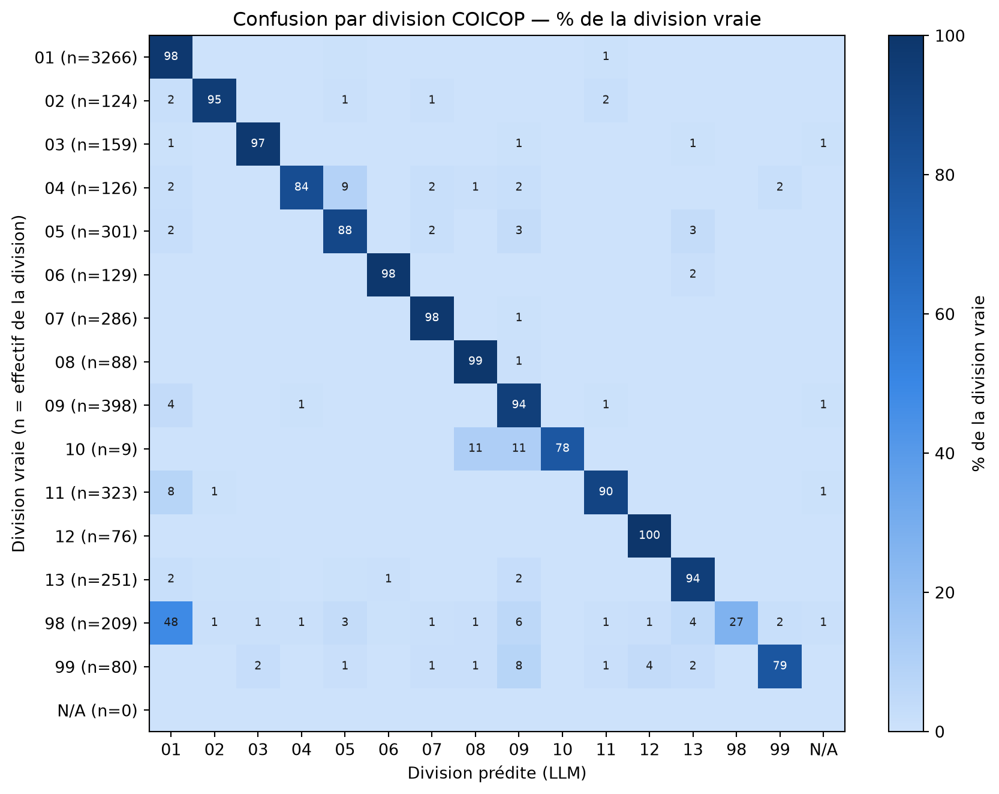

[charger_donnees] projet-budget-famille/data/workflow_runs/2026-06-29/codif-vvkv9/decide-coicop/predictions.parquet → shape = (5825, 38)Fiabilité des classifieurs
Où peut-on faire confiance aux classifieurs de base, et où faut-il le LLM-judge ?
Cette section cherche, à partir de l’accord et du désaccord entre les quatre classifieurs de base (LCS, RAG, RAG-ANN, TTC), les situations où l’on peut leur faire confiance sans passer par le LLM-as-ajudge, et celles où il reste nécessaire. L’objectif final est de tirer des règles métier simples (par exemple : “si tel classifieur tranche seul dans telle division, on le suit directement”). Différents axes sont étudiés :
- Accords unanimes : quand les 4 classifieurs de base sont d’accord, ont-ils raison ? Quels sont les faux positifs partagés ?
- 3 contre 1 : quand 3 classifieurs s’accordent contre un dissident, la majorité l’emporte-t-elle à raison ?
- Un seul classifieur a raison : quels classifieurs apportent une valeur ajoutée dans les cas les plus difficiles (dont le LLM-judge), et dans quelles divisions COICOP ces cas se concentrent-ils ?
Vue synthétique multi-niveaux
Décomposition, pour chaque niveau de troncature COICOP, de la part des observations en accord correct unanime, faux positif partagé par tous les classifieurs (dont le LLM), faux positif rattrapé par le LLM, ou désaccord.
| Accord unanime | % accord | Corrects | % corrects (accords) | Faux positifs | FP partagés (+LLM) | LLM rattrape | |
|---|---|---|---|---|---|---|---|
| Niveau | |||||||
| 1 | 3479 | 59.7% | 3462 | 99.5% | 17 | 17 | 0 |
| 2 | 3207 | 55.1% | 3190 | 99.5% | 17 | 16 | 1 |
| 3 | 2207 | 37.9% | 2186 | 99.0% | 21 | 20 | 1 |
| 4 | 1520 | 26.1% | 1510 | 99.3% | 10 | 10 | 0 |
Accuracy par classifieur, par division (vérité terrain)
Accuracy de chacun des 5 classifieurs (les 4 classifieurs de base et le LLM-judge) contre code, ventilée par division COICOP (niveau 1 du vrai code), pour chaque niveau de troncature de comparaison. La ligne TOTAL donne l’accuracy globale de chaque classifieur ; les autres lignes la détaillent par division. Les divisions 98 et 99 sont des codes à part entière, que les classifieurs doivent aussi savoir détecter, elles sont donc traitées ici comme n’importe quelle autre division, sans exclusion.
Accuracy par classifieur, par division (niveau 4)
| Effectif | LCS | RAG | RAG-ANN | TTC | LLM-judge | |
|---|---|---|---|---|---|---|
| Division | ||||||
| 01 | 3266 | 54.9% | 51.6% | 90.0% | 82.4% | 85.5% |
| 02 | 124 | 43.5% | 38.7% | 49.2% | 92.7% | 92.7% |
| 03 | 159 | 14.5% | 61.0% | 94.3% | 32.1% | 69.8% |
| 04 | 126 | 38.1% | 23.0% | 77.0% | 55.6% | 73.0% |
| 05 | 301 | 43.5% | 43.9% | 93.4% | 80.7% | 81.7% |
| 06 | 129 | 26.4% | 21.7% | 89.1% | 25.6% | 45.7% |
| 07 | 286 | 63.6% | 73.8% | 87.4% | 79.0% | 87.1% |
| 08 | 88 | 21.6% | 20.5% | 34.1% | 61.4% | 83.0% |
| 09 | 398 | 45.5% | 40.5% | 70.6% | 73.4% | 86.7% |
| 10 | 9 | 0.0% | 33.3% | 44.4% | 66.7% | 66.7% |
| 11 | 323 | 29.1% | 34.7% | 97.5% | 55.1% | 82.4% |
| 12 | 76 | 25.0% | 23.7% | 32.9% | 60.5% | 81.6% |
| 13 | 251 | 49.4% | 21.1% | 29.5% | 88.0% | 93.2% |
| 98 | 209 | 0.5% | 0.0% | 87.1% | 17.7% | 25.8% |
| 99 | 80 | 28.7% | 0.0% | 93.8% | 78.8% | 77.5% |
| TOTAL | 5825 | 46.8% | 44.6% | 83.8% | 74.3% | 81.9% |
Accuracy par classifieur, par division (niveau 3)
| Effectif | LCS | RAG | RAG-ANN | TTC | LLM-judge | |
|---|---|---|---|---|---|---|
| Division | ||||||
| 01 | 3266 | 62.4% | 64.8% | 98.1% | 87.6% | 89.7% |
| 02 | 124 | 46.8% | 68.5% | 96.8% | 92.7% | 92.7% |
| 03 | 159 | 32.7% | 72.3% | 96.9% | 67.9% | 92.5% |
| 04 | 126 | 38.1% | 38.1% | 93.7% | 56.3% | 75.4% |
| 05 | 301 | 49.5% | 59.8% | 96.3% | 85.0% | 84.7% |
| 06 | 129 | 42.6% | 48.1% | 93.8% | 47.3% | 72.1% |
| 07 | 286 | 68.9% | 84.6% | 99.7% | 88.1% | 94.8% |
| 08 | 88 | 21.6% | 60.2% | 93.2% | 61.4% | 83.0% |
| 09 | 398 | 49.0% | 69.6% | 96.7% | 76.4% | 91.0% |
| 10 | 9 | 11.1% | 33.3% | 44.4% | 66.7% | 66.7% |
| 11 | 323 | 35.3% | 56.0% | 98.8% | 70.0% | 88.9% |
| 12 | 76 | 25.0% | 60.5% | 100.0% | 60.5% | 81.6% |
| 13 | 251 | 49.4% | 49.4% | 98.0% | 88.0% | 93.2% |
| 98 | 209 | 0.5% | 0.0% | 87.6% | 18.2% | 25.8% |
| 99 | 80 | 28.7% | 0.0% | 93.8% | 78.8% | 77.5% |
| TOTAL | 5825 | 53.1% | 60.6% | 97.2% | 80.4% | 86.6% |
Accuracy par classifieur, par division (niveau 2)
| Effectif | LCS | RAG | RAG-ANN | TTC | LLM-judge | |
|---|---|---|---|---|---|---|
| Division | ||||||
| 01 | 3266 | 85.9% | 80.4% | 99.1% | 96.4% | 97.2% |
| 02 | 124 | 47.6% | 76.6% | 96.8% | 92.7% | 93.5% |
| 03 | 159 | 35.2% | 79.2% | 98.1% | 69.2% | 96.9% |
| 04 | 126 | 40.5% | 43.7% | 95.2% | 61.9% | 83.3% |
| 05 | 301 | 50.2% | 63.5% | 96.3% | 86.0% | 86.0% |
| 06 | 129 | 62.0% | 72.1% | 100.0% | 51.9% | 96.9% |
| 07 | 286 | 77.6% | 89.5% | 99.7% | 93.4% | 98.3% |
| 08 | 88 | 36.4% | 81.8% | 97.7% | 84.1% | 96.6% |
| 09 | 398 | 50.8% | 72.9% | 98.0% | 81.4% | 92.5% |
| 10 | 9 | 11.1% | 66.7% | 88.9% | 66.7% | 66.7% |
| 11 | 323 | 37.2% | 63.8% | 98.8% | 72.1% | 90.1% |
| 12 | 76 | 64.5% | 76.3% | 100.0% | 84.2% | 100.0% |
| 13 | 251 | 51.8% | 53.0% | 98.0% | 89.2% | 93.6% |
| 98 | 209 | 0.5% | 0.0% | 88.0% | 21.1% | 26.8% |
| 99 | 80 | 28.7% | 0.0% | 93.8% | 78.8% | 77.5% |
| TOTAL | 5825 | 68.4% | 72.2% | 98.2% | 87.1% | 92.6% |
Accuracy par classifieur, par division (niveau 1)
| Effectif | LCS | RAG | RAG-ANN | TTC | LLM-judge | |
|---|---|---|---|---|---|---|
| Division | ||||||
| 01 | 3266 | 89.7% | 83.9% | 99.2% | 97.2% | 98.0% |
| 02 | 124 | 47.6% | 79.8% | 96.8% | 92.7% | 95.2% |
| 03 | 159 | 36.5% | 81.1% | 98.7% | 69.8% | 97.5% |
| 04 | 126 | 43.7% | 47.6% | 95.2% | 64.3% | 84.1% |
| 05 | 301 | 62.1% | 73.1% | 96.7% | 90.4% | 88.0% |
| 06 | 129 | 65.1% | 76.0% | 100.0% | 57.4% | 98.4% |
| 07 | 286 | 78.7% | 91.3% | 99.7% | 94.4% | 98.3% |
| 08 | 88 | 43.2% | 88.6% | 100.0% | 87.5% | 98.9% |
| 09 | 398 | 61.3% | 78.9% | 98.5% | 84.7% | 93.7% |
| 10 | 9 | 11.1% | 77.8% | 88.9% | 66.7% | 77.8% |
| 11 | 323 | 37.2% | 64.1% | 98.8% | 72.1% | 90.1% |
| 12 | 76 | 64.5% | 76.3% | 100.0% | 84.2% | 100.0% |
| 13 | 251 | 52.2% | 57.0% | 98.0% | 89.6% | 94.0% |
| 98 | 209 | 0.5% | 0.0% | 89.5% | 26.3% | 27.3% |
| 99 | 80 | 45.0% | 0.0% | 93.8% | 80.0% | 78.8% |
| TOTAL | 5825 | 72.4% | 75.8% | 98.4% | 88.5% | 93.4% |
Accuracy du LLM-judge par division (vérité terrain)
Même lecture, mais focalisée sur le LLM-judge seul (indépendamment des autres classifieurs) : accuracy de llm_code contre code, ventilée par division COICOP vraie (rappel), pour chaque niveau de troncature. Comme dans la section précédente, les divisions 98 et 99 sont traitées comme n’importe quelle autre division, sans exclusion.
Accuracy du LLM-judge par division (niveau 4)
| Effectif | Corrects | Erreurs | Accuracy | |
|---|---|---|---|---|
| Division | ||||
| 01 | 3266 | 2794 | 472 | 85.5% |
| 02 | 124 | 115 | 9 | 92.7% |
| 03 | 159 | 111 | 48 | 69.8% |
| 04 | 126 | 92 | 34 | 73.0% |
| 05 | 301 | 246 | 55 | 81.7% |
| 06 | 129 | 59 | 70 | 45.7% |
| 07 | 286 | 249 | 37 | 87.1% |
| 08 | 88 | 73 | 15 | 83.0% |
| 09 | 398 | 345 | 53 | 86.7% |
| 10 | 9 | 6 | 3 | 66.7% |
| 11 | 323 | 266 | 57 | 82.4% |
| 12 | 76 | 62 | 14 | 81.6% |
| 13 | 251 | 234 | 17 | 93.2% |
| 98 | 209 | 54 | 155 | 25.8% |
| 99 | 80 | 62 | 18 | 77.5% |
| TOTAL | 5825 | 4768 | 1057 | 81.9% |
Accuracy du LLM-judge par division (niveau 3)
| Effectif | Corrects | Erreurs | Accuracy | |
|---|---|---|---|---|
| Division | ||||
| 01 | 3266 | 2928 | 338 | 89.7% |
| 02 | 124 | 115 | 9 | 92.7% |
| 03 | 159 | 147 | 12 | 92.5% |
| 04 | 126 | 95 | 31 | 75.4% |
| 05 | 301 | 255 | 46 | 84.7% |
| 06 | 129 | 93 | 36 | 72.1% |
| 07 | 286 | 271 | 15 | 94.8% |
| 08 | 88 | 73 | 15 | 83.0% |
| 09 | 398 | 362 | 36 | 91.0% |
| 10 | 9 | 6 | 3 | 66.7% |
| 11 | 323 | 287 | 36 | 88.9% |
| 12 | 76 | 62 | 14 | 81.6% |
| 13 | 251 | 234 | 17 | 93.2% |
| 98 | 209 | 54 | 155 | 25.8% |
| 99 | 80 | 62 | 18 | 77.5% |
| TOTAL | 5825 | 5044 | 781 | 86.6% |
Accuracy du LLM-judge par division (niveau 2)
| Effectif | Corrects | Erreurs | Accuracy | |
|---|---|---|---|---|
| Division | ||||
| 01 | 3266 | 3173 | 93 | 97.2% |
| 02 | 124 | 116 | 8 | 93.5% |
| 03 | 159 | 154 | 5 | 96.9% |
| 04 | 126 | 105 | 21 | 83.3% |
| 05 | 301 | 259 | 42 | 86.0% |
| 06 | 129 | 125 | 4 | 96.9% |
| 07 | 286 | 281 | 5 | 98.3% |
| 08 | 88 | 85 | 3 | 96.6% |
| 09 | 398 | 368 | 30 | 92.5% |
| 10 | 9 | 6 | 3 | 66.7% |
| 11 | 323 | 291 | 32 | 90.1% |
| 12 | 76 | 76 | 0 | 100.0% |
| 13 | 251 | 235 | 16 | 93.6% |
| 98 | 209 | 56 | 153 | 26.8% |
| 99 | 80 | 62 | 18 | 77.5% |
| TOTAL | 5825 | 5392 | 433 | 92.6% |
Accuracy du LLM-judge par division (niveau 1)
| Effectif | Corrects | Erreurs | Accuracy | |
|---|---|---|---|---|
| Division | ||||
| 01 | 3266 | 3200 | 66 | 98.0% |
| 02 | 124 | 118 | 6 | 95.2% |
| 03 | 159 | 155 | 4 | 97.5% |
| 04 | 126 | 106 | 20 | 84.1% |
| 05 | 301 | 265 | 36 | 88.0% |
| 06 | 129 | 127 | 2 | 98.4% |
| 07 | 286 | 281 | 5 | 98.3% |
| 08 | 88 | 87 | 1 | 98.9% |
| 09 | 398 | 373 | 25 | 93.7% |
| 10 | 9 | 7 | 2 | 77.8% |
| 11 | 323 | 291 | 32 | 90.1% |
| 12 | 76 | 76 | 0 | 100.0% |
| 13 | 251 | 236 | 15 | 94.0% |
| 98 | 209 | 57 | 152 | 27.3% |
| 99 | 80 | 63 | 17 | 78.8% |
| TOTAL | 5825 | 5442 | 383 | 93.4% |
Précision du LLM-judge par division prédite
Vue complémentaire de la section précédente : au lieu de partir de la division vraie (rappel), on part ici de la division que le LLM a prédite, et on regarde quelle part de ces prédictions est effectivement correcte (précision). Répond à la question « quand le LLM annonce telle division, a-t-il raison ? ». Le regroupement par ligne (division annoncée par le LLM) est le même dans tous les tableaux ci-dessous ; seul le niveau auquel on juge une prédiction “correcte” change.
Précision par division prédite (niveau 4)
| Effectif | Corrects | Erreurs | Précision | |
|---|---|---|---|---|
| Division prédite (LLM) | ||||
| 01 | 3356 | 2794 | 562 | 83.3% |
| 02 | 129 | 115 | 14 | 89.1% |
| 03 | 163 | 111 | 52 | 68.1% |
| 04 | 112 | 92 | 20 | 82.1% |
| 05 | 301 | 246 | 55 | 81.7% |
| 06 | 133 | 59 | 74 | 44.4% |
| 07 | 292 | 249 | 43 | 85.3% |
| 08 | 97 | 73 | 24 | 75.3% |
| 09 | 427 | 345 | 82 | 80.8% |
| 10 | 7 | 6 | 1 | 85.7% |
| 11 | 316 | 266 | 50 | 84.2% |
| 12 | 82 | 62 | 20 | 75.6% |
| 13 | 262 | 234 | 28 | 89.3% |
| 98 | 63 | 54 | 9 | 85.7% |
| 99 | 72 | 62 | 10 | 86.1% |
| TOTAL | 5825 | 4768 | 1057 | 81.9% |
Précision par division prédite (niveau 3)
| Effectif | Corrects | Erreurs | Précision | |
|---|---|---|---|---|
| Division prédite (LLM) | ||||
| 01 | 3356 | 2928 | 428 | 87.2% |
| 02 | 129 | 115 | 14 | 89.1% |
| 03 | 163 | 147 | 16 | 90.2% |
| 04 | 112 | 95 | 17 | 84.8% |
| 05 | 301 | 255 | 46 | 84.7% |
| 06 | 133 | 93 | 40 | 69.9% |
| 07 | 292 | 271 | 21 | 92.8% |
| 08 | 97 | 73 | 24 | 75.3% |
| 09 | 427 | 362 | 65 | 84.8% |
| 10 | 7 | 6 | 1 | 85.7% |
| 11 | 316 | 287 | 29 | 90.8% |
| 12 | 82 | 62 | 20 | 75.6% |
| 13 | 262 | 234 | 28 | 89.3% |
| 98 | 63 | 54 | 9 | 85.7% |
| 99 | 72 | 62 | 10 | 86.1% |
| TOTAL | 5825 | 5044 | 781 | 86.6% |
Précision par division prédite (niveau 2)
| Effectif | Corrects | Erreurs | Précision | |
|---|---|---|---|---|
| Division prédite (LLM) | ||||
| 01 | 3356 | 3173 | 183 | 94.5% |
| 02 | 129 | 116 | 13 | 89.9% |
| 03 | 163 | 154 | 9 | 94.5% |
| 04 | 112 | 105 | 7 | 93.8% |
| 05 | 301 | 259 | 42 | 86.0% |
| 06 | 133 | 125 | 8 | 94.0% |
| 07 | 292 | 281 | 11 | 96.2% |
| 08 | 97 | 85 | 12 | 87.6% |
| 09 | 427 | 368 | 59 | 86.2% |
| 10 | 7 | 6 | 1 | 85.7% |
| 11 | 316 | 291 | 25 | 92.1% |
| 12 | 82 | 76 | 6 | 92.7% |
| 13 | 262 | 235 | 27 | 89.7% |
| 98 | 63 | 56 | 7 | 88.9% |
| 99 | 72 | 62 | 10 | 86.1% |
| TOTAL | 5825 | 5392 | 433 | 92.6% |
Précision par division prédite (niveau 1)
| Effectif | Corrects | Erreurs | Précision | |
|---|---|---|---|---|
| Division prédite (LLM) | ||||
| 01 | 3356 | 3200 | 156 | 95.4% |
| 02 | 129 | 118 | 11 | 91.5% |
| 03 | 163 | 155 | 8 | 95.1% |
| 04 | 112 | 106 | 6 | 94.6% |
| 05 | 301 | 265 | 36 | 88.0% |
| 06 | 133 | 127 | 6 | 95.5% |
| 07 | 292 | 281 | 11 | 96.2% |
| 08 | 97 | 87 | 10 | 89.7% |
| 09 | 427 | 373 | 54 | 87.4% |
| 10 | 7 | 7 | 0 | 100.0% |
| 11 | 316 | 291 | 25 | 92.1% |
| 12 | 82 | 76 | 6 | 92.7% |
| 13 | 262 | 236 | 26 | 90.1% |
| 98 | 63 | 57 | 6 | 90.5% |
| 99 | 72 | 63 | 9 | 87.5% |
| TOTAL | 5825 | 5442 | 383 | 93.4% |
Confusion par division COICOP
Les deux tableaux ci-dessus se lisent en fait sur une seule et même matrice de confusion (division vraie × division prédite par le LLM) : une ligne redonne l’accuracy par division vraie (section précédente), une colonne redonne la précision par division prédite. La diagonale concentre les accords ; les cellules hors diagonale montrent où se concentrent les confusions.

(Interprétation à compléter : divisions les plus fiables, confusions récurrentes)